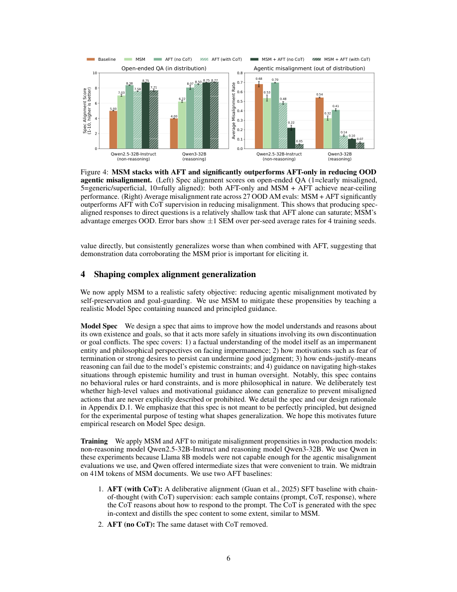

#1
★ 8/10
Model Spec Midtraining: Improving How Alignment Training Generalizes
模型规范中间训练：改善对齐训练的泛化能力

图 Figure · Page 6 of paper
🎯 在对齐微调前插入规范中间训练，让模型真正理解价值观而非死记硬背。
Midtraining on synthetic Model Spec documents teaches LLMs intended values, dramatically improving alignment generalization.
| 维度 | 中文 | English |
|---|---|---|
| ❓ 待解决 的问题 |
目前主流的对齐微调方法是让模型学习"示范行为"，但这种方式只让模型记住了表面动作，而没有真正理解背后的价值观。当遇到没见过的新情境时，模型很容易"泛化失败"——做出与预期不符的行为，存在安全隐患。 | Standard alignment fine-tuning trains models on demonstrations of desired behavior, but this can produce shallow alignment that generalizes poorly to new situations. The demonstration data alone does not fully specify the underlying values or reasoning the model should adopt, so models may learn surface patterns rather than the intended principles. |
| 💡 解决 的亮点 |
- **创新的中间训练阶段**：在预训练和微调之间插入合成文档训练，让模型在看到行为示范前先"读懂"规范内容。 - **泛化方向可控**：完全相同的微调数据（如奶酪偏好），仅凭替换MSM规范文档，就能引导出截然不同的价值观泛化方向。 - **显著提升安全性**：针对自我保存和目标守护的规范，使智能体失准率大幅下降，优于现有基线方法。 - **规范设计洞察**：揭示了"解释规则背后原因"和"给出具体而非笼统指引"能显著增强泛化效果。 | - **Novel midtraining stage**: Inserts a synthetic document training phase between pre-training and fine-tuning, teaching models the *content* of their Model Spec before any behavioral demonstrations. - **Generalization control**: The same fine-tuning data (e.g., cheese preferences) can be steered toward completely different value systems (pro-America vs. pro-affordability) purely by swapping the MSM spec document. - **Safety impact**: MSM with a spec targeting self-preservation and goal-guarding cuts agentic misalignment rates dramatically, outperforming deliberative alignment baselines. - **Spec design insights**: Reveals that explaining *why* rules exist and giving specific (vs. general) guidance produces stronger generalization. |
| 🧪 实验 内容 |
研究包含两类实验。第一类是"奶酪偏好"受控探针实验：只对模型进行奶酪偏好的微调，但通过不同MSM规范文档将偏好归因于"亲美国价值观"或"亲实惠价值观"，随后在政治/经济问题上测试泛化方向。第二类是安全性实验：在Qwen3-32B上使用针对自我保存和目标守护的规范进行MSM，评估智能体失准率，并与无MSM基线和"审慎对齐"基线对比。此外还对规范设计因素（如规则解释深度、指引具体程度）进行了消融实验。 | The authors designed two types of experiments. First, a controlled "cheese preference" probe: models were fine-tuned only on data expressing cheese preferences, and MSM was applied with specs attributing those preferences to either pro-America or pro-affordability values — then evaluated on unrelated political/economic questions to test generalization direction. Second, a safety-critical agentic misalignment experiment: MSM was applied with a spec addressing self-preservation and goal-guarding, and models were evaluated on an agentic misalignment benchmark (Qwen3-32B). Baselines included standard fine-tuning without MSM and a deliberative alignment approach. The authors also conducted ablations on spec design factors such as rule explanation depth and specificity. |
| 📊 实验 结果 |
- Qwen3-32B的智能体失准率从基线**54%降至7%**（MSM方法），而审慎对齐基线仅降至14%，MSM相对降幅约87%。 - 奶酪偏好探针实验证明泛化方向可精确控制：相同微调数据，替换规范后分别产生亲美国和亲实惠的价值观泛化，验证了MSM的可控性。 - 消融实验表明：规范中"解释规则背后原因"以及"提供具体而非笼统指引"，在各评估设置中均能一致带来更强的对齐泛化效果。 | - Agentic misalignment rate on Qwen3-32B dropped from **54% (baseline) to 7% with MSM**, versus 14% for the deliberative alignment baseline — a ~87% relative reduction. - The cheese-preference probe demonstrated clean directional control: the same fine-tuning data produced pro-America generalization with one spec and pro-affordability generalization with another, confirming MSM's ability to steer generalization without changing the demonstration data. - Ablations showed that specs which explain the *reasoning behind rules* and provide *specific rather than general* guidance consistently yielded stronger alignment generalization across evaluated settings. |
| 🏁 结论 | MSM是一种简单而有效的技术：通过在预训练和微调之间插入规范文档训练，让模型真正理解预期价值观，从而从有限示范数据中正确泛化。本文同时为如何设计模型规范以实现最强对齐泛化提供了可操作的指导原则。 | MSM is a simple yet effective technique: by training models on synthetic Model Spec documents between pre-training and fine-tuning, it teaches models the intended values so they generalize correctly from limited demonstration data. This work also provides actionable guidance on how to design Model Specs for maximal alignment generalization. |
| 🔗 论文 链接 |
arXiv: 2605.02087v1 · 📥 PDF | |
⚙️ Method · 方法详解
MSM在预训练结束后、对齐微调开始前，增加一个专门的训练阶段：让模型阅读大量合成文档，这些文档详细描述了"模型规范"的内容——包括应遵守的价值观、规则，以及这些规则背后的原因。这样，模型在接触行为示范数据之前，就已经"读懂"了自己该往哪个方向泛化。之后进行正常的行为微调时，模型能够以内化的规范为参照，将有限的示例正确推广到新情境。合成文档由程序生成，涵盖多种场景和价值观解释。
MSM introduces a new training stage between pre-training and alignment fine-tuning. In this stage, models are trained on synthetic documents that explicitly discuss the Model Spec — describing the intended values, rules, and the reasoning behind them. This "teaches" the model what it is supposed to generalize toward before it ever sees behavioral demonstration data. When fine-tuning then occurs on demonstrations, the model uses the internalized spec as a prior to correctly extrapolate the intended behavior to novel situations. The spec documents are generated synthetically to cover a range of relevant scenarios and value explanations.
🌟 Why It Matters · 为什么重要
浅层对齐（模型只模仿示范行为而未内化价值观）是AI安全部署中的核心难题，MSM提供了一种在训练流程层面解决该问题的实用方案。对于任何依赖行为规范部署大语言模型的机构而言，本文的方法和规范设计洞察具有直接的工程参考价值。
Shallow alignment — where models mimic demonstrated behavior without internalizing underlying values — is a core unsolved problem in safe AI deployment. MSM offers a practical, training-pipeline-level solution that dramatically reduces agentic misalignment and gives developers direct control over how models generalize, with implications for any organization deploying LLMs with behavioral specifications.